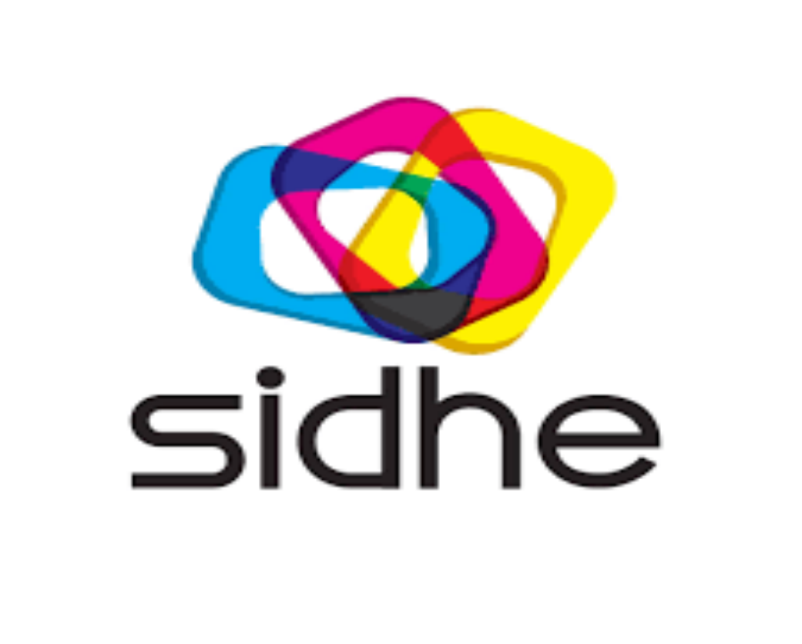

Probador Virtual
Pruébate tus tenis en 3D
● desconectado
— FPS
⚙
Acércate para probártelos 👟
Colócate frente al espejo
Conectando con el server RTMW3D…
📸 Guardar foto
Ajustes (modo instalación)
Espejo
Ver puntos
🎬 Video de marca
Voltear pie izq
Reset ajustes
Escala
Alto
Frente
Giro
Perspectiva
Cabeceo
Proporción
Apertura